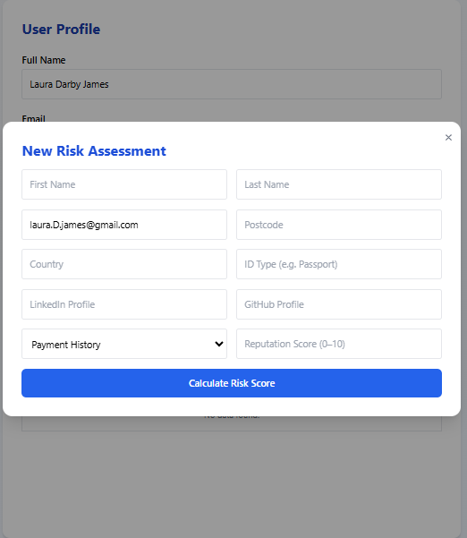

How It Works
RiskPeek makes evaluating trust simple, transparent, and secure. Here’s how it works in three clear steps:
1. Provide Information
You can assess yourself or someone else. Enter essential details such as name, country, payment history, and optional links to public profiles (LinkedIn, GitHub, etc.). If assessing someone else, be sure you have their consent or are using publicly available information.
For training examples, see our user guide covering identity, reputation, and digital footprint sections.
2. Generate a Risk Score
Our system securely analyzes your data across multiple dimensions:
- Identity Verification
- Payment History
- Online Reputation
- Compliance and Sanctions Checks
- Digital Footprint
The process typically takes under 30 seconds. You’ll see a progress indicator while we match and verify records.

Each score includes a clear explanation of contributing factors, helping you understand your trust profile in detail.
3. Save, Share, or Download
Registered users can save assessments to their dashboard, download PDF reports, or securely share results with others. All sharing is fully consent-based—only you decide who sees your information.

For deeper insights, you can upgrade to a premium report with enhanced verification, recommendations, and historical tracking.
Last updated: July 2025